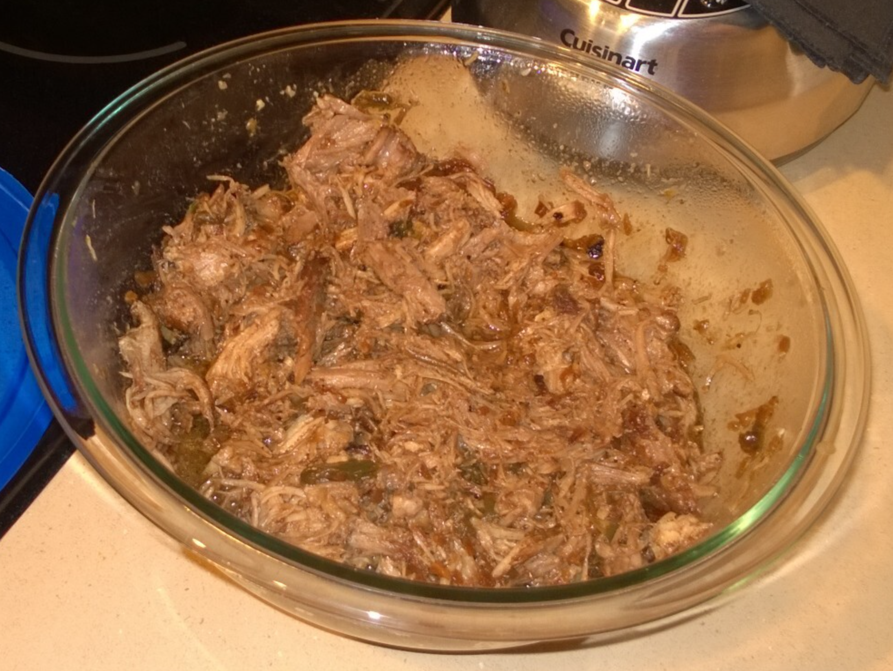

Pulled Pork

Ingredients
- 1.5-2 kg boneless pork shoulder
- 6-8 cloves garlic, peeled and crushed
- 8 tbs tomato ketchup
- 4 tbs cider vinegar
- 2 tbs paprika
- 2 tbs dark muscovado sugar
- 2 tbs Worcestershire sauce
- 2 tbs Dijon mustard (Colman's English Mustard is a good sub)
- Salt and freshly ground black pepper
Directions
- Make Sauce: Combine all sauce ingredients in a bowl and mix well.
- Marinate Pork: Coat pork thoroughly with the sauce, cover with cling film, and refrigerate 2-3 hours, preferably overnight.
- Cook Low & Slow: Bake pork in a covered dish at 275°F for 6-8 hours, basting occasionally, until very tender.
- Slow-Cooker Option: Alternatively, cook pork with sauce on LOW for 8-10 hours, without opening the lid, until tender.
- Rest: Remove pork from heat and rest ~10 minutes.
- Reduce Sauce: Pour cooking liquid into a small pan, skim off fat, and boil to reduce and thicken slightly.
- Shred Pork: Remove skin and visible fat. Shred meat with two forks.
- Finish & Serve: Stir shredded pork into the reduced sauce and serve.
The Gumbo Page
Michael Fritsche
mbf@fritsche.org